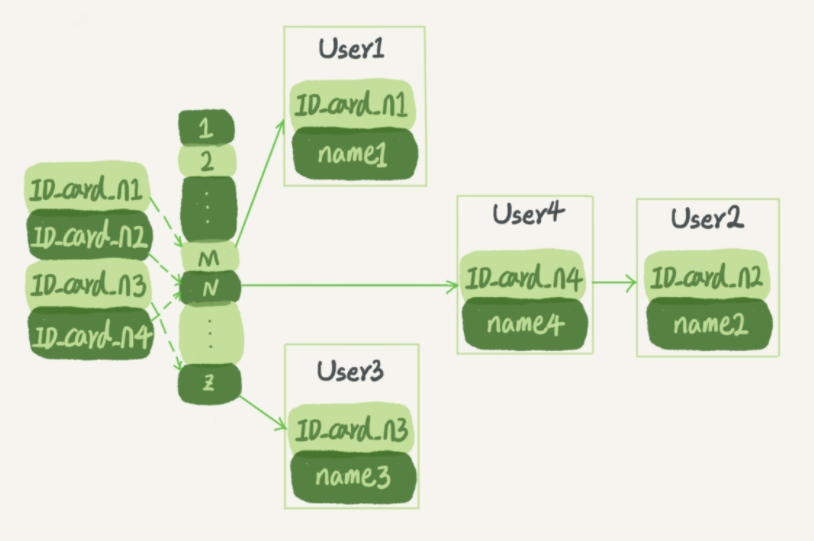
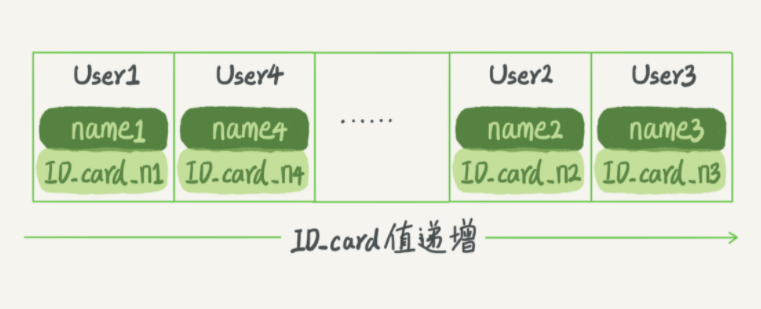
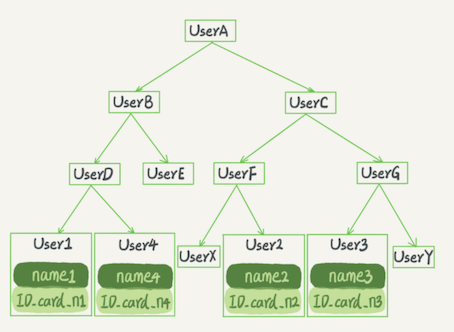
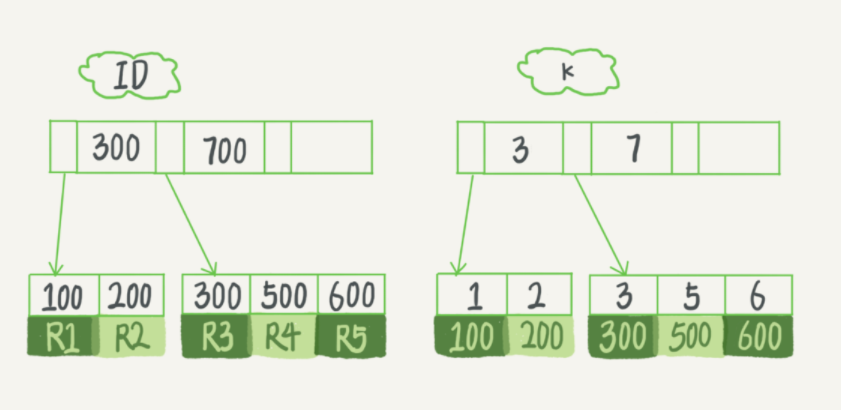
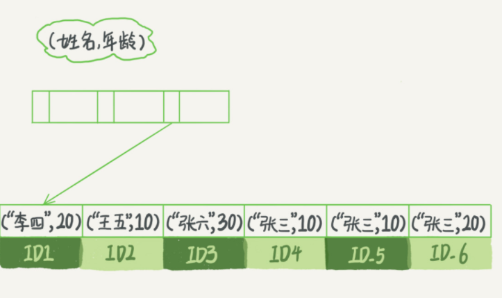
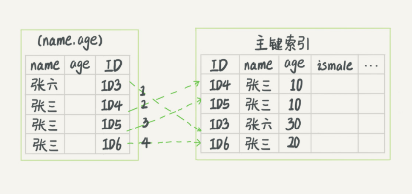
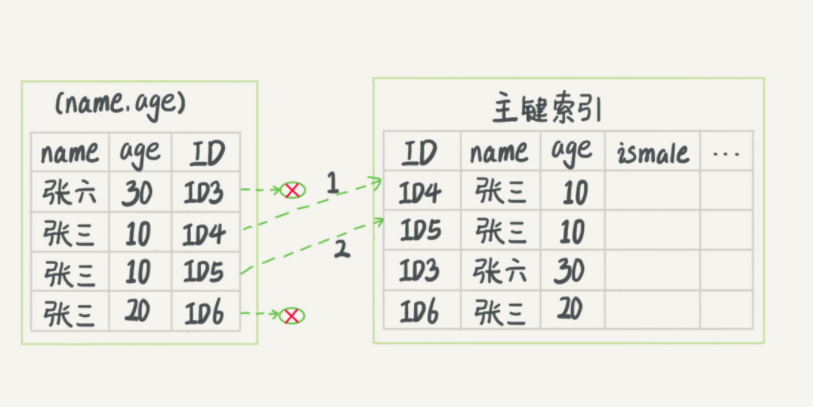

第四节 深入浅出索引
索引的出现其实就是为了提高数据查询的效率，就像书的目录一样。同样，对于数据库的表而言，索引其实就是它的“目录”。
1、索引的常见模型
索引的出现是为了提高查询效率，但是实现索引的方式却有很多种，所以这里也就引入了索引模型的概念。
三种常见、也比较简单的数据结构，它们分别是哈希表、有序数组和搜索树。
1-1 哈希表
哈希表是一种以键 - 值（key-value）存储数据的结构，我们只要输入待查找的键即 key，就可以找到其对应的值即 Value。
哈希的思路很简单，把值放在数组里，用一个哈希函数把 key 换算成一个确定的位置，然后把 value 放在数组的这个位置。
多个 key 值经过哈希函数的换算，会出现同一个值的情况。处理这种情况的一种方法是，拉出一个链表
Key value都放在链表里面，用key算出的哈希值放在数组里。当需要用key查value时，先算出哈希值，找到指定数组，再用key去遍历后面的链表，因为链表中同时包含key value，就可以找到指定的value了。
假设，你现在维护着一个身份证信息和姓名的表，需要根据身份证号查找对应的名字，这时对应的哈希索引的示意图如下所示：

- User2 和 User4 根据身份证号算出来的值都是 N，但没关系，后面还跟了一个链表。
- 假设，这时候你要查
ID_card_n2对应的名字是什么，处理步骤就是： - 首先，将
ID_card_n2通过哈希函数算出N； - 然后，按顺序遍历，找到 User2。
需要注意的是，图中四个 ID_card_n 的值并不是递增的，这样做的好处是增加新的 User 时速度会很快，只需要往后追加。
但缺点是，因为不是有序的，所以哈希索引做区间查询的速度是很慢的。
你可以设想下，如果你现在要找身份证号在[ID_card_X, ID_card_Y]这个区间的所有用户，就必须全部扫描一遍
所以，哈希表这种结构适用于只有等值查询的场景，比如 Memcached 及其他一些 NoSQL 引擎。
而有序数组在等值查询和范围查询场景中的性能就都非常优秀。
1-2 有序数组
还是上面这个根据身份证号查名字的例子，如果我们使用有序数组来实现的话，

假设身份证号没有重复，这个数组就是按照身份证号递增的顺序保存的。这时候如果你要查 ID_card_n2 对应的名字，用二分法就可以快速得到，这个时间复杂度是 O(log(N))。
数组已排序时用二分法查询最快
同时很显然，这个索引结构支持范围查询。
你要查身份证号在[ID_card_X, ID_card_Y]区间的 User，可以先用二分法找到 ID_card_X（如果不存在ID_card_X，就找到大于 ID_card_X 的第一个 User），然后向右遍历，直到查到第一个大于 ID_card_Y 的身份证号，退出循环。
- 如果仅仅看查询效率，有序数组就是最好的数据结构了。
- 但是，在需要更新数据的时候就麻烦了，你往中间插入一个记录就必须得挪动后面所有的记录，成本太高。
有序数组索引只适用于静态存储引擎
有序数组不管是等值查找和范围查找都很优秀，可是有序数组不适合更新删除增加。比较适合静态数组静态数据。
1-3 二叉搜索树

二叉搜索树的特点是：
父节点左子树所有结点的值小于父节点的值，右子树所有结点的值大于父节点的值。
这样如果你要查 ID_card_n2 的话，按照图中的搜索顺序就是按照 UserA -> UserC -> UserF -> User2 这个路径得到。这个时间复杂度是 O(log(N))。
当然为了维持 O(log(N)) 的查询复杂度，你就需要保持这棵树是平衡二叉树。为了做这个保证，更新的时间复杂度也是 O(log(N))。
查询和更新的时间复杂度都是O(logN)
。二叉树是搜索效率最高的，但是实际上大多数的数据库存储却并不使用二叉树。其原因是，索引不止存在内存中，还要写到磁盘上。
为什么数据库存储使用b+树 而不是二叉树，因为二叉树树高过高，每次查询都需要访问过多节点，即访问数据块过多，而从磁盘随机读取数据块过于耗时。
你可以想象一下一棵 100 万节点的平衡二叉树，树高 20。一次查询可能需要访问 20 个数据块。在机械硬盘时代，从磁盘随机读一个数据块需要 10 ms 左右的寻址时间。也就是说，对于一个 100 万行的表，如果使用二叉树来存储，单独访问一个行可能需要 20 个 10 ms 的时间，这个查询可真够慢的。
为了让一个查询尽量少地读磁盘，就必须让查询过程访问尽量少的数据块。那么，我们就不应该使用二叉树，而是要使用“N 叉”树。这里，“N 叉”树中的“N”取决于数据块的大小。
以 InnoDB 的一个整数字段索引为例，这个 N 差不多是 1200。 N 叉树由于在读写上的性能优点，以及适配磁盘的访问模式，已经被广泛应用在数据库引擎中了。
在 MySQL 中，索引是在存储引擎层实现的，所以并没有统一的索引标准，即不同存储引擎的索引的工作方式并不一样。
2、InnoDB 的索引模型
在 InnoDB 中，表都是根据主键顺序以索引的形式存放的，这种存储方式的表称为索引组织表。
又因为前面我们提到的，InnoDB 使用了 B+ 树索引模型，所以数据都是存储在 B+ 树中的。
每一个索引在 InnoDB 里面对应一棵 B+ 树。
假设，我们有一个主键列为 ID 的表，表中有字段 k，并且在 k 上有索引。
mysql> create table T(
id int primary key,
k int not null,
name varchar(16),
index (k)) engine=InnoDB;
表中 R1~R5 的 (ID,k) 值分别为 (100,1)、(200,2)、(300,3)、(500,5) 和 (600,6)，两棵树的示例示意图如下。

索引类型分为主键索引和非主键索引。
主键索引的叶子存该行的数据，非主键索引的叶子结点保存的是主键索引的引用。
- 主键索引的叶子节点存的是整行数据。在 InnoDB 里，主键索引也被称为聚簇索引（clustered index）。
- 非主键索引的叶子节点内容是主键的值。在 InnoDB 里，非主键索引也被称为二级索引（secondary index）。
key:主键的值，value:整行数据。 普通列索引： key：索引列的值， value:主键的值。
基于主键索引和普通索引的查询有什么区别？
- 如果语句是
select * from T where ID=500，即主键查询方式，则只需要搜索 ID 这棵 B+ 树； - 如果语句是
select * from T where k=5，即普通索引查询方式，则需要先搜索k索引树，得到ID的值为500，再到ID索引树搜索一次。这个过程称为回表。
普通索引或者又叫二级索引查询方式: 需要先查二级索引树,查到id,然后根据id查询主键索引树
3、索引维护
B+ 树为了维护索引有序性，在插入新值的时候需要做必要的维护。
以上面这个图为例，如果插入新的行 ID 值为 700，则只需要在 R5 的记录后面插入一个新记录。如果新插入的 ID 值为 400，就相对麻烦了，需要逻辑上挪动后面的数据，空出位置
而更糟的情况是，如果 R5 所在的数据页已经满了，根据 B+ 树的算法，这时候需要申请一个新的数据页，然后挪动部分数据过去。这个过程称为页分裂。在这种情况下，性能自然会受影响。
- 除了性能外，页分裂操作还影响数据页的利用率。原本放在一个页的数据，现在分到两个页中，整体空间利用率降低大约 50%。
- 当然有分裂就有合并。当相邻两个页由于删除了数据，利用率很低之后，会将数据页做合并。合并的过程，可以认为是分裂过程的逆过程。
小结： 一个数据页满了，按照B+Tree算法，新增加一个数据页，叫做页分裂，会导致性能下降。空间利用率降低大概50%。当相邻的两个数据页利用率很低的时候会做数据页合并，合并的过程是分裂过程的逆过程。
自增主键防止页分裂，逻辑删除并非物理删除防止页合并
自增主键是指自增列上定义的主键，在建表语句中一般是这么定义的：
NOT NULL PRIMARY KEY AUTO_INCREMENT
- 插入新记录的时候可以不指定 ID 的值，系统会获取当前 ID 最大值加 1 作为下一条记录的 ID 值。
- 自增主键的插入数据模式，正符合了我们前面提到的递增插入的场景。每次插入一条新记录，都是追加操作，都不涉及到挪动其他记录，也不会触发叶子节点的分裂。
而有业务逻辑的字段做主键，则往往不容易保证有序插入，这样写数据成本相对较高。
可以自己根据业务需要，自己生成唯一的自增的ID，这样既可以能满足业务需要，又能保证插入的性能。 生成唯一ID的算法：雪花算法等。
从性能和存储空间方面考量，自增主键往往是更合理的选择。
由于每个非主键索引的叶子节点上都是主键的值。如果用身份证号做主键，那么每个二级索引的叶子节点占用约 20 个字节，而如果用整型做主键，则只要 4 个字节，如果是长整型（bigint）则是 8 个字节。
显然，主键长度越小，普通索引的叶子节点就越小，普通索引占用的空间也就越小。
每一张表其实就是好几棵B+树，树结点的key值就是某一行的主键，value是该行的其他数据。新建索引就是新增一个B+树，查询不走索引就是遍历主B+树。
4、思考题1
对于上面例子中的 InnoDB 表 T，如果你要重建索引 k，你的两个 SQL 语句可以这么写：
alter table T drop index k;
alter table T add index(k);
如果你要重建主键索引，也可以这么写：
alter table T drop primary key;
alter table T add primary key(id);
我的问题是，，通过两个 alter 语句重建索引 k，以及通过两个 alter 语句重建主键索引是否合理。
- 重建索引 k 的做法是合理的，可以达到省空间的目的。
- 但是，重建主键的过程不合理。不论是删除主键还是创建主键，都会将整个表重建。
5、覆盖索引
在下面这个表 T 中，如果我执行 select * from T where k between 3 and 5，需要执行几次树的搜索操作，会扫描多少行？
mysql> create table T (
ID int primary key,
k int NOT NULL DEFAULT 0,
s varchar(16) NOT NULL DEFAULT '',
index k(k))
engine=InnoDB;
insert into T values(100,1, 'aa'),(200,2,'bb'),(300,3,'cc'),(500,5,'ee'),(600,6,'ff'),(700,7,'gg');
现在，我们一起来看看这条 SQL 查询语句的执行流程：
- 在 k 索引树上找到 k=3 的记录，取得 ID = 300；
- 再到 ID 索引树查到 ID=300 对应的 R3；
- 在 k 索引树取下一个值 k=5，取得 ID=500；
- 再回到 ID 索引树查到 ID=500 对应的 R4；
- 在 k 索引树取下一个值 k=6，不满足条件，循环结束。
回到主键索引树搜索的过程，我们称为回表
可以看到，这个查询过程读了 k 索引树的 3 条记录（步骤 1、3 和 5），回表了两次（步骤 2 和 4）。
在这个例子中，由于查询结果所需要的数据只在主键索引上有，所以不得不回表。
如果执行的语句是
select ID from T where k between 3 and 5
这时只需要查 ID 的值，而 ID 的值已经在 k 索引树上了，因此可以直接提供查询结果，不需要回表
也就是说，在这个查询里面，索引 k 已经“覆盖了”我们的查询需求，我们称为覆盖索引。
需要注意的是，在引擎内部使用覆盖索引在索引 k 上其实读了三个记录，R3~R5（对应的索引 k 上的记录项），但是对于 MySQL 的 Server 层来说，它就是找引擎拿到了两条记录，因此 MySQL 认为扫描行数是 2。
在一个市民信息表上，是否有必要将身份证号和名字建立联合索引？
一般不建议使用业务相关字段作为主键，即使其具有唯一性特性（如身份证）。因为，当业务变更（如身份证升位），就会带来灾难。
CREATE TABLE `tuser` (
`id` int(11) NOT NULL,
`id_card` varchar(32) DEFAULT NULL,
`name` varchar(32) DEFAULT NULL,
`age` int(11) DEFAULT NULL,
`ismale` tinyint(1) DEFAULT NULL,
PRIMARY KEY (`id`),
KEY `id_card` (`id_card`),
KEY `name_age` (`name`,`age`)
) ENGINE=InnoDB
我们知道，身份证号是市民的唯一标识。
也就是说，如果有根据身份证号查询市民信息的需求，我们只要在身份证号字段上建立索引就够了。而再建立一个（身份证号、姓名）的联合索引，是不是浪费空间？
给
id_card和name建立联合索引后，name的值也会被保存在id_card索引树的节点上，这样根据给定id_card的值找到的对应行时，就可以直接获取到name了，而不需要拿着对应的主键再进行回表操作。
如果现在有一个高频请求，要根据市民的身份证号查询他的姓名，这个联合索引就有意义了。它可以在这个高频请求上用到覆盖索引，不再需要回表查整行记录，减少语句的执行时间。
在联合索引上使用，也可以避免回表。这个也可以应用到项目开发中。
当然，索引字段的维护总是有代价的。因此，在建立冗余索引来支持覆盖索引时就需要权衡考虑了
6、最左前缀原则
看到这里你一定有一个疑问，如果为每一种查询都设计一个索引，索引是不是太多了。
B+ 树这种索引结构，可以利用索引的“最左前缀”，来定位记录。
为了直观地说明这个概念，我们用（name，age）这个联合索引来分析。

联合索引先根据第一个字段排序，如果第一个字段有相同的，就按照第二个字段排序，注意，这里仅仅有相同的第一个字段情况下，才会根据第二个字段排序。
- 当你的逻辑需求是查到所有名字是“张三”的人时，可以快速定位到 ID4，然后向后遍历得到所有需要的结果。
- 如果你要查的是所有名字第一个字是“张”的人，你的 SQL 语句的条件是
"where name like ‘张 %’"。这时，你也能够用上这个索引，查找到第一个符合条件的记录是 ID3，然后向后遍历，直到不满足条件为止。
like aa%后模糊查询索引有效，like %aa模糊查询索引无效
- 不只是索引的全部定义，只要满足最左前缀，就可以利用索引来加速检索。这个最左前缀可以是联合索引的最左 N 个字段，也可以是字符串索引的最左 M 个字符。
在建立联合索引的时候，如何安排索引内的字段顺序。
这里我们的评估标准是，索引的复用能力。因为可以支持最左前缀，所以当已经有了 (a,b) 这个联合索引后，一般就不需要单独在 a 上建立索引了
第一原则是，如果通过调整顺序，可以少维护一个索引，那么这个顺序往往就是需要优先考虑采用的。
所以我们要为高频请求创建 (身份证号，姓名）这个联合索引，并用这个索引支持“根据身份证号查询地址”的需求。
如果既有联合查询，又有基于 a、b 各自的查询呢？查询条件里面只有 b 的语句，是无法使用 (a,b) 这个联合索引的，这时候你不得不维护另外一个索引，也就是说你需要同时维护 (a,b)、(b) 这两个索引。
这时候，我们要考虑的原则就是空间了。比如上面这个市民表的情况，name 字段是比 age 字段大的 ，那我就建议你创建一个（name,age) 的联合索引和一个 (age) 的单字段索引。
(a,b)、(b) 还是 (b,a)、(a)？考虑空间，字段长的只建立一次，短的建立两次。
7、索引下推
那些不符合最左前缀的部分，会怎么样呢？
我们还是以市民表的联合索引（name, age）为例。如果现在有一个需求：检索出表中“名字第一个字是张，而且年龄是 10 岁的所有男孩”。那么，SQL 语句是这么写的：
mysql> select * from tuser where name like '张%' and age=10 and ismale=1;
根据前缀索引规则，所以这个语句在搜索索引树的时候，只能用 “张”，找到第一个满足条件的记录 ID3。
在 MySQL 5.6 之前，只能从 ID3 开始一个个回表。到主键索引上找出数据行，再对比字段值。
而 MySQL 5.6 引入的索引下推优化（index condition pushdown)， 可以在索引遍历过程中，对索引中包含的字段先做判断，直接过滤掉不满足条件的记录，减少回表次数。
无索引下推执行流程

在 (name,age) 索引里面我特意去掉了 age 的值，这个过程 InnoDB 并不会去看 age 的值，只是按顺序把“name 第一个字是’张’”的记录一条条取出来回表。因此，需要回表 4 次。
索引下推执行流程

- 每一个虚线箭头表示回表一次。
InnoDB 在 (name,age) 索引内部就判断了 age 是否等于 10，对于不等于 10 的记录，直接判断并跳过。在我们的这个例子中，只需要对 ID4、ID5 这两条记录回表取数据判断，就只需要回表 2 次。
8、思考题2
有这么一个表，表结构定义类似这样的：
CREATE TABLE `test` (
`a` int(11) NOT NULL,
`b` int(11) NOT NULL,
`c` int(11) NOT NULL,
`d` int(11) NOT NULL,
PRIMARY KEY (`a`,`b`),
KEY `c` (`c`),
KEY `ca` (`c`,`a`),
KEY `cb` (`c`,`b`)
) ENGINE=InnoDB;
由于历史原因，这个表需要 a、b 做联合主键
既然主键包含了 a、b 这两个字段，那意味着单独在字段 c 上创建一个索引，就已经包含了三个字段了呀，为什么要创建“ca”“cb”这两个索引？
是因为他们的业务里面有这样的两种语句：
select * from test where c=N order by a limit 1;
select * from test where c=N order by b limit 1;
为了这两个查询模式，这两个索引是否都是必须的？为什么呢？
答案： 对于二级索引C，会默认和主键做联合索引。所以索引c的排序为cab，索引cb的排序顺序为cba。所以，结论是 ca 可以去掉，cb 需要保留。